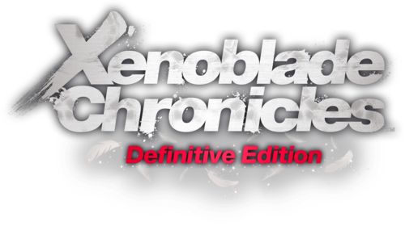

Xenoblade Chronicles: Definitive Edition

| Release Date: | May 29th, 2020 |
| Genre: | Action JRPG |
| Developer: | Monolith Soft |
| Platform: | Nintendo Switch |
| Details: | Nintendo |
Xenoblade Chronicles: Definitive Edition is a remastered port of Xenoblade Chronicles that released back on the Nintendo Wii. This version is fairly unchanged from the original, with some additional features added and reworked UI elements, but I didn't play the original to really know how different it is. I've heard about this series a lot from others recommending it to me, but besides that knew little about it. This past Christmas I had some leftover e-shop funds and decided what better time to try out the game than while out of town with just my switch. As you could tell, took me well past the holidays to finish the main story of the game. I didn't complete the late-game quests, as I didn't want to grind to the max level, but with 77 hours of playtime for the first completion, I think I experienced it fully.
Story/Worldbuilding
To begin, I want to touch on the story, as that is what really kept me glued to the game. The game does a great job of introducing the setting of the game, giving you just enough information to understand why the opening fight is happening, and then it lets you experience the world alongside the characters as they learn it. It helped me feel connected to the characters, wondering what's going on right there with them. It kept the story interesting with not going too long without providing some answers to some questions, leaving the room for more theories and questions, urging you to keep going on to uncover them. It's hard to talk about it without going into spoilers, but it gave me the experience similar to reading a really rich fantasy novel, which is like candy for me!
Outside of the main story, the world around you feels alive. There's plenty of NPCs with their own lives and struggles, which can change as you interact with some of the quests that they provide you. The game not only includes an affinity chart for your party members, but your party with the different factions of the world, and how members of each faction are related to one another. It helps make these NPCs feel more than a textbox, but with a purpose and how they fit in with their society. As you progress through the story, the world changes around you as well. Some areas may become inaccessible after key story events, which is annoying from a gameplay perspective, but makes perfect sense given as to what just occurred.
Gameplay
I'd say there's two main gameplay loops throughout this game: exploration and combat. The game acts like an open-level world, where there's different areas in which you can freely explore, but it's not seamless in transitioning between them. The game pushes you in a way to explore each level to it's fullest, rewarding you with various rewards based on your completion. There's random collectibles that you can use to fill out your encyclopedia, giving you extra equipment to make you stronger. Key locations become fast travel points on your map, and reward you with hefty amounts of experience for reaching them. There's ore deposits off the beaten path to give you materials to craft better equipment, or might find a unique monster tucked away that is a challenge to defeat, but gives special rewards and currency for defeating them. While it can take quite a bit of time to explore an entire level, it doesn't feel like wasted time with all the rewards it gives you.
While exploring, you find many different kinds of enemies that you can engage in combat with, but it's usually up to the player to initiate combat. No random encounters, and transitioning between exploration and combat is seamless. The combat itself I feel is similar to the Tales series, but less combo focused and more focused on positioning and utilizing skills at the right moment. Your party will automatically attack for you, but you pick which skills you'd like to activate at a given time. Some skills apply certain debuffs depending on your position, buffs/debuffs the caster/enemy may have, or they have different attack patterns or requirements to cast. It feels fast-paced, but it can also be a bit of a puzzle as to figuring out which skills to cast when to effectively dispatch enemies. Each character has different skillsets that can change up how combat it played, which helps accommodate different playstyles. While a bit slower than other action RPGs, it's still an enjoyable combat loop, but it is nice that combat is player initiated, as it can get tiring after a while.
Visuals & Audio
Just wanting to briefly touch on this, but this game is beautiful. With the main setting of the game taking place upon titans, there's moments in the game where you'd overlook an area, and think "oh my gosh, that's the titan's arm." Even outside of the setting, some of the areas have this picturesque view where you'll stop and just admire the scenery around you. While the texturing isn't in the highest resolution, it's enough to make everything look at home and in place. The music in the game varies from atmospheric and fitting for the current setting, to downright upbeat and worthy of listening on its own. I tried listening to the OST on its own and while some of the songs I'd just skip over, they're pleasant to listen to in-game as it helps with providing the necessary atmosphere for that area/cutscene.
Overall Thoughts
Overall, this was a really fun game to play and really scratched the itch of a story-rich JRPG that I needed this winter. I can totally understand how the overall gameplay isn't for everyone, as it was beginning to wear on me near the end of the game. However, the story of this game is phenomenal and kept me going all the way to the end. After a session, I'd just sit there for a bit thinking about the current events unfolding and trying to come up with theories as to what would happen next. If you like a good fantasy novel and enjoy action-based combat, this game is definitely worth a try. If it doesn't have you hooked after the reaching Gaur Plain, then I get it. Otherwise, you're in for a wild ride.